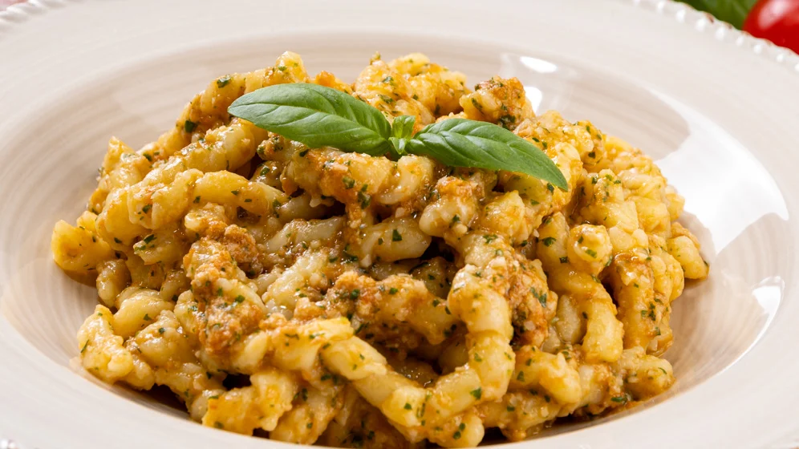

Busiate con pesto alla trapanese

Description
The Busiate con pesto alla trapanese is a traditional dish from Trapani's Provence.
The typical curly pasta is seasond with a pesto made out of basil, almomnds, garlic, fresh cherry tomatoes and of course lots of olive oil!
Ingredients for 4 servings:
- 400g of fresh busiate
- 50g of fresh basil
- 100g of Extra Virgin Olive Oil
- 40g of toasted almonds
- 2 cloves of garlic
- 50g pecorino cheese
- 200g of diced cherry tomatoes
- 5g salt
Steps
- Fill a pot with salted water and bring it to boil.
- Meanwhile prepare the pesto, in a mixing bowl add the olive oil, salt, basil, almonds, garlic and cheese.
- Blend until combined than transfer in a bowl.
- Add the diced cherry tomatoes to the pesto.
- Throw the pasta in the water and when al dente, drain it in the bowl with the pesto and mix.